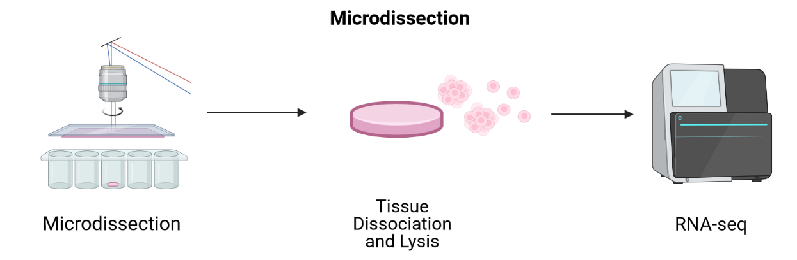

Spatially Resolved Transcriptomics in Life Sciences Research
Last updated on 2024-06-20 | Edit this page
Overview
Questions
- What is spatial transcriptomics?
- What research questions or problems can spatial transcriptomics address?
- How do the technologies work?
- Which technology will we learn about in this lesson?
Objectives
- Describe why and how spatial transcriptomics can be used in research.
- Describe how spatial transcriptomics technology works.
- Describe how spatial transcriptomics addresses the limitations of single-cell or bulk RNA sequencing technologies.
Spatial transcriptomics in biomedical research
Investigating the organization of cells and tissues is fundamental to life sciences research. Cells and tissues situated in different regions of an organ can possess diverse functions and cell types. These cells in turn are influenced by varying tissue microenvironments, receiving and processing distinct information from that microenvironment. Co-located cells can communicate directly with one another through chemical and mechanical signals, responding to these signals with changes in their own state. Thus, knowing the spatial organization of cells in a tissue can reveal cell and tissue function.

Department of Histology, Jagiellonian University Medical College CC BY-SA 3.0 DEED
{kind=link}
Spatially resolved transcriptomics describes spatial organization and cell signals, specifically gene expression signals. Spatial patterns of gene expression determine how genes are regulated within a tissue system and how those tissues and their component cells function. Spatial transcriptomic (ST) methods map cell position in a tissue, clarifying the physical relationships between cells and cellular structures. ST simultaneously measures gene expression, delivering valuable information about cell phenotype, state, and cell and tissue organization and function. The combination of cellular expression and position sheds light on signals a cell sends or receives through cell-to-cell interactions. Spatial information localizes cell signaling while delivering comprehensive gene expression profiling within tissues.

Fred the Oyster Public domain, via Wikimedia Commons CC BY-SA 4.0 DEED
{kind=link}
Spatial transcriptomics addresses a key obstacle in single-cell and bulk RNA sequencing studies: their loss of spatial information. Spatial organization and structure determine function in most tissues and organs, so capturing both spatial and expression information is critical for understanding tissue function in neuroscience, immuno-oncology, developmental biology, and most other fields.
Spatial transcriptomics technologies
Spatial transcriptomics technologies broadly fall within two groups: imaging-based and sequencing-based methods. Both imaging- and sequence-based datasets are available through the The BRAIN Initiative - Cell Census Network. Sequencing-based datasets are featured in the Human Cell Atlas. These technologies vary in ability to profile entire transcriptomes, deliver single-cell resolution, and detect genes efficiently.
Imaging-based technologies
Imaging-based technologies read transcriptomes in place using microscopy at single-cell or even single-molecule resolution. They identify messenger RNA (mRNA) species fluorescence in situ hybridization (FISH), i.e., by hybridizing mRNA to gene-specific fluorescent probes.

Adapted from Spatial Transcriptomics Overview by SlifertheRyeDragon. Image created with Biorender.com. Public domain, via Wikimedia Commons CC BY-SA 4.0 DEED
{kind=link}
RNA can be visualized in place in the original tissue environment by hybridizing labeled probes to their specific targets. Current FISH methods employ multiple hybridization rounds, with risk of error for each transcript growing exponentially with each round. FISH methods are limited in the size of tissue that they can profile and most are applicable only to fresh-frozen (FF) tissue. They can also be time-consuming and expensive due to microscopic imaging they require. Since they target specific genes, they can only detect genes that are in the probe set. They have high spatial resolution though, even delivering single-molecule resolution in single-molecule FISH (smFISH). Even technologies that can profile hundreds or thousands of mRNA transcripts simultaneously, though, target throughput is low and spectral overlap of fluorophores complicates microscopy.
Conventional FISH methods have few distinct color channels that limit the number of genes that can be simultaneously analyzed. Multiplexed error-robust FISH (MERFISH) overcomes this problem, greatly increasing the number of RNA species that can be simultaneously imaged in single cells by using binary code gene labeling in multiple rounds of hybridization.

SlifertheRyeDragon, CC BY-SA 4.0, via Wikimedia Commons
{kind=link}
A second imaging-based method, in situ sequencing, amplifies and sequences mRNAs directly within a block or section of fresh-frozen (FF) or formalin-fixed paraffin embedded (FFPE) tissue.
 Adapted from Spatial Transcriptomics Overview by SlifertheRyeDragon.
Image created with Biorender.com. Public domain, via Wikimedia Commons
CC
BY-SA 4.0 DEED
Adapted from Spatial Transcriptomics Overview by SlifertheRyeDragon.
Image created with Biorender.com. Public domain, via Wikimedia Commons
CC
BY-SA 4.0 DEED
Messenger RNA (mRNA) is reverse transcribed to complementary DNA (cDNA) within tissue sections. A “padlock” probe binds to the cDNA, which is then circularized. Following circularization, the cDNA is amplified by rolling-circle amplification (RCA), then sequenced by ligation for decoding. Probes profile one or two bases at a time using different fluorophores, eventually revealing the identity of the cDNA through imaging. Since it requires imaging, in situ sequencing is an imaging-based method even though it involves sequencing. In situ sequencing can accommodate larger tissue sections than can FISH, though FISH methods are more efficient at detecting mRNA of genes in the probe set. Like FISH, in situ sequencing requires considerable imaging time on a microscope but delivers high spatial resolution. Both methods require a priori knowledge of target mRNA.
Sequencing-based technologies
Sequencing-based methods capture, sequence, and count mRNA using next-generation sequencing while retaining positional information. This is distinct from in situ sequencing because next-generation sequencing is employed. Sequencing-based methods may be unbiased, in which they capture the entire transcriptome, or probe-based, in which they typically capture the majority of protein-coding genes. Sequencing-based methods retain spatial information through laser-capture microdissection (LCM), microfluidics, or through ligation of mRNAs to arrays of barcoded probes that record position.
LCM-based methods employ lasers to cut a tissue slice or fuse tissue to a membrane followed by sequencing of individual cells.
 Adapted from Spatial Transcriptomics Overview by SlifertheRyeDragon. Image created with Biorender.com. Public domain, via Wikimedia Commons CC BY-SA 4.0 DEED
LCM techniques process tissue sections for transcriptomic profiling by isolating regions of interest. They are useful for profiling transcriptomes as a first pass and for identifying RNA isoforms, but their blunt approach to capturing spatial expression data limits spatial resolution and requires many samples for sequencing. Since they focus on regions of interest, it is difficult to grasp spatial expression across a whole tissue. LCM is an older technology that has long been used with FFPE tissues. Modern LCM-based approaches include Nanostring’s GeoMx DSP and STRP-seq.
Microfluidics places a chip with multiple barcode-containing channels onto a tissue section followed by a second chip with channels perpendicular to the first. The barcodes are then ligated to each other to create an array of unique barcodes on the tissue. This “deterministic barcoding” is employed in DBiT-seq. DBiT-seq can be used with FFPE tissues. This approach is helpful to avoid diffusion of mRNA away from capture areas, though a disadvantage is that cells often sit astride multiple capture areas.
 Adapted from
Liu
Y, Enninful A, Deng Y, & Fan R (2020). Spatial transcriptome
sequencing of FFPE tissues at cellular level. Preprint.
CC
BY-SA 4.0 DEED
Adapted from
Liu
Y, Enninful A, Deng Y, & Fan R (2020). Spatial transcriptome
sequencing of FFPE tissues at cellular level. Preprint.
CC
BY-SA 4.0 DEED
Other array-based methods capture mRNA with spatially-barcoded probes and sequence them. They can profile larger tissue sections than can FISH or in situ sequencing and they don’t rely on time-consuming microscopic imaging. Spatial resolution is lower, however.
In this lesson we will use data from positionally barcoded arrays.

James Chell, Spatial transcriptomics ii, CC BY-SA 4.0
{kind=link}
| Technology | Gene detection efficiency | Transcriptome-wide profiling | Spatial resolution | Tissue area |
|---|---|---|---|---|
| FISH | + | - | + | - |
| In situ sequencing | - | - | + | + |
| LCM-based | + | + | - | - |
| Microfluidics | - | + | - | + |
| Array-based | - | + | - | + |
Table 1. Relative strengths and weaknesses of spatial transcriptomics technologies by general category.
The diversity in spatial transcriptomics technologies is enormous and rapidly developing. If you would like to learn more about spatial transcriptomics technologies, please see the list of references located here.
Discussion: Which technology is right for your research?
Would an imaging-based or a sequencing-based solution be preferable for your research? Why?
From the descriptions above, which technology do you think would best suit your research? Would you use fresh-frozen (FF) or formalin-fixed tissues embedded in paraffin (FFPE)? Even if your institution does not offer service using a specific technology, describe which best suits your research and why you think it’s best suited.
Which technology you use depends on your experimental aim. If you are testing hypotheses about specific genes, you can profile those genes at high resolution and sensitivity with an imaging-based method. If instead you aim to generate hypotheses, next generation sequencing-based methods that profile many genes in an unbiased manner would be best.
10X Genomics Visium technology
In this lesson we will use data from an array-based method called Visium that is offered by 10X Genomics. Visium is an upgrade and commercialization of the spatial transcriptomics method described in 2016 in Science, 353(6294) and illustrated in general in the figure above. A more specific schematic is given below.

Thin tissue sections are placed atop spots printed with spatial barcodes. For fresh-frozen (FF) tissues, tissue fixing and permeabilization discharges mRNA to bind with spatially barcoded probes that indicate the position on the slide. The assay is sensitive to permeabilization time, which is often optimized in a separate experimental procedure. Captured mRNA is then reverse transcribed to cDNA and sequencing libraries created from these. The formalin-fixed paraffin embedded (FFPE) assay utilizes probe pairs that identify each gene in the probe set and capture target genes by hybridizing to them. Permeabilization discharges the captured mRNA to spatially barcoded probes on the slide, but does not require a separate optimization step as in the FF protocol. The capture mRNA is then extended to include complements of the spatial barcodes. Sequencing libraries are then formed from the captured and barcoded mRNA.
Spatial transcriptomics combines two key modes: histological imaging and gene expression profiling. Histological imaging captures tissue morphology with standard staining protocols while expression profiling is captured by sequencing spatially barcoded cDNA.
Sequencing-based datasets have grown faster than have imaging-based datasets, with Visium dominating published datasets. Unlike most other sequencing-based technologies, Visium accommodates both FF or FFPE tissue. Each spot provides average gene expression measurements from between one to a few tens of cells, approaching single-cell resolution. Average gene expression measurements are combined with histological images that couple molecular detail and tissue morphology and structure.
Key Points
- Spatial transcriptomics provides the location of cells relative to neighboring cells and cell structures.
- A cell’s location is useful data for describing its phenotype, state, and cell and tissue function.
- Spatial transcriptomics addresses a key obstacle in bulk and single-cell RNA sequencing studies: their loss of spatial information.
- The main goal of spatial transcriptomics studies is to integrate expression with spatial information.